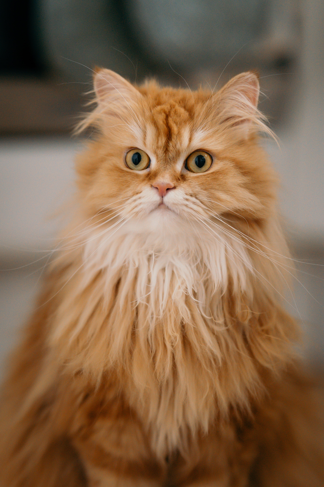
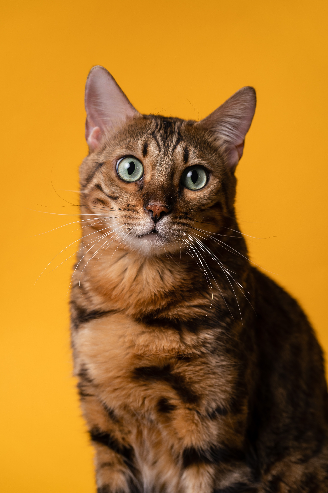

Persian Cat

The Persian cat is a long-haired breed of cat characterized by its round face and short muzzle. It is also known as the "Persian Longhair" in English-speaking countries. The first documented ancestors of Persian cats were imported into Italy from Persia around 1620.
British Shorthair

The British Shorthair is the pedigreed version of the traditional British domestic cat, with a distinctively stocky body, dense coat, and broad face. The most familiar colour variant is the "British Blue", with a solid grey-blue coat, orange eyes, and a medium-sized tail.
Siamese Cat

The Siamese cat is one of the first distinctly recognized breeds of Asian cat. Derived from the Wichianmat landrace, one of several varieties of cat native to Thailand, the original Siamese became one of the most popular breeds in Europe and North America in the 19th century.
Scottish Fold

The Scottish Fold is a breed of domestic cat with a natural dominant gene mutation that affects cartilage throughout the body, causing the ears to "fold", bending forward and down towards the front of the head, which gives the cat what is often described as an "owl-like" appearance.
Siberian Cat

The Siberian is a centuries-old landrace of domestic cat in Russia and recently developed as a formal breed with standards promulgated the world over since the late 1980s. Siberians vary from medium to medium-large in size.
Bengal Cat

The Bengal cat is a domesticated cat breed created from hybrids of domestic cats, especially the spotted Egyptian Mau, with the Asian leopard cat. The breed name comes from the leopard cat's taxonomic name.